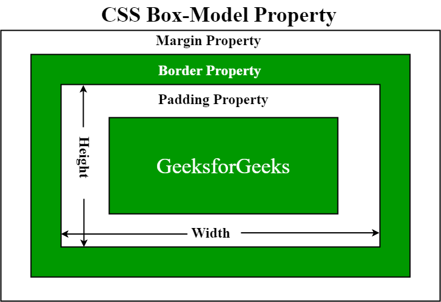
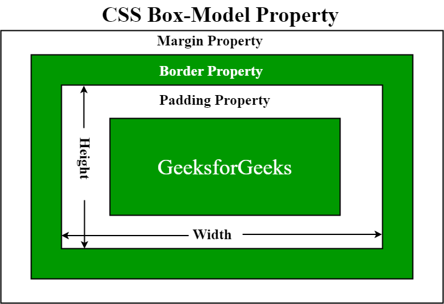

№1. What is a box model in CSS?
The box model in CSS describes how elements are rendered on a web page. It consists of four components: Content (actual content); Padding (the space between); Border (surrounding the padding and content) and Margin (The space outside the border) The box-sizing property defines how the total width and height of an element are calculated.
№2. What is a clearfix hack?
It is used to solve a common issue with floated elements. The clearfix hack ensures that the parent container expands to accommodate the floated elements.
№3. What is a margin collapse?
Margin Collapse occurs when the top and bottom margins of block-level elements combine into a single margin. The resulting margin size is the largest of the individual margins (or just one of them if they are equal). This behavior can lead to unexpected spacing between elements.
№4. What was the problem with achieving Holy Grail layout?
The Holy Grail layout is a page layout with equal height columns. This layout was difficult to achieve due to limitations in CSS and HTML. Equal height columns, especially when content changed, was difficult to achieve without hacks.
№5. What are the modern ways to achieve Holy Grail layout?
Use CSS Grid (provides a robust solution for creating complex layouts, including the Holy Grail layout) or Flexbox (can be used with some conceits, like grouping elements). However, CSS Grid is a better choice. Responsive Attributes: Use responsive attributes to adapt the layout based on screen size.

 
